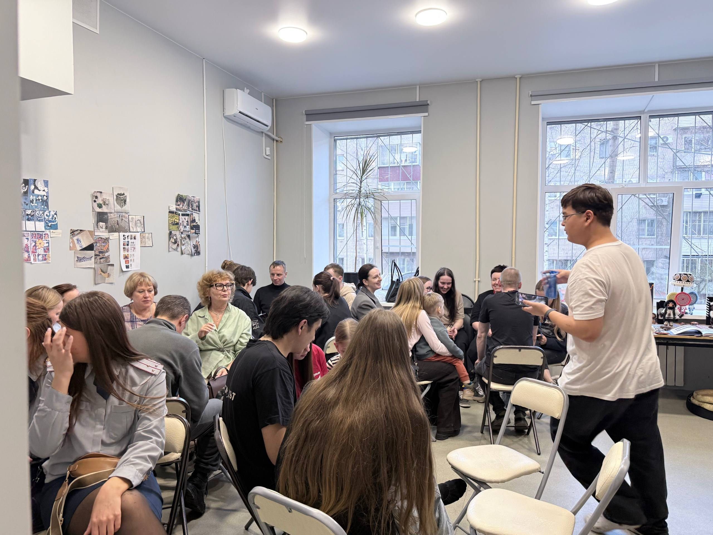
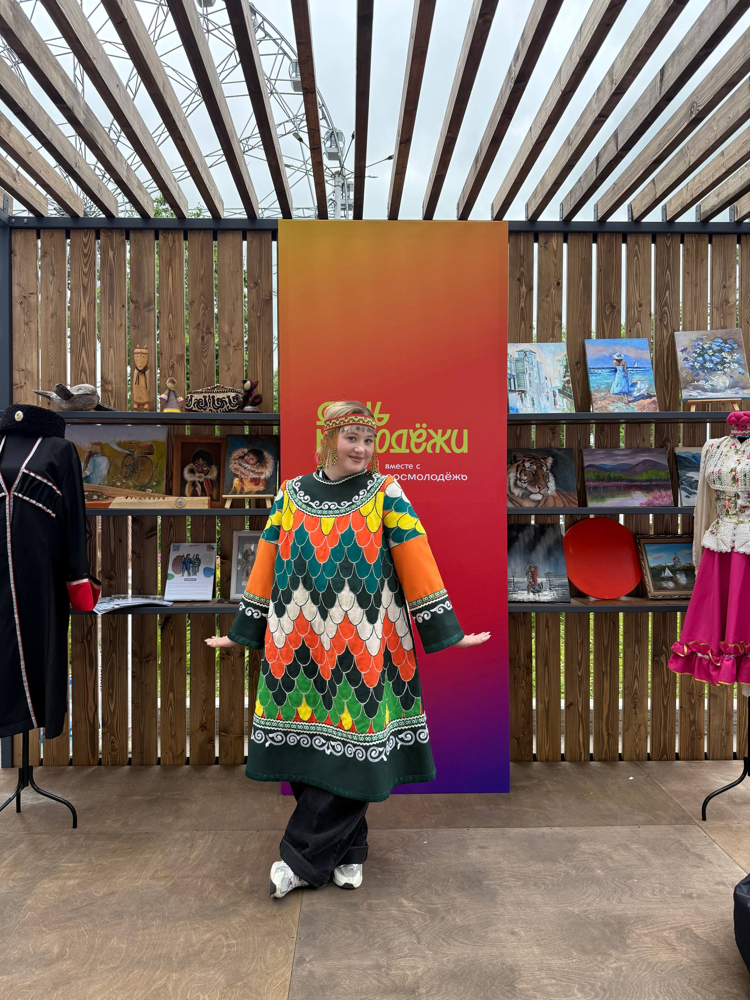
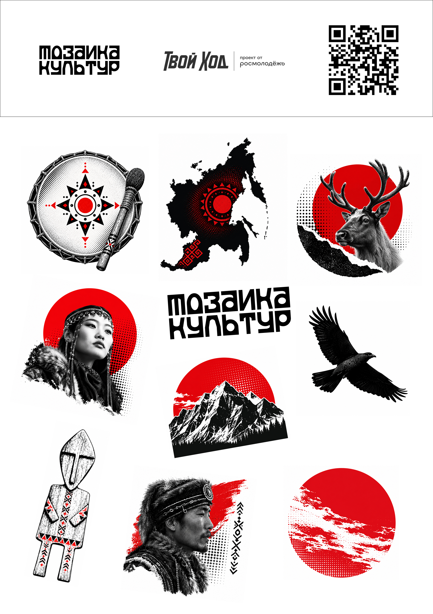

образовательный проект
Мозаика культур
Современный сайт о коренных народах Дальнего Востока: коротко, бережно и визуально чисто. После мероприятий здесь можно изучить культуру, язык, территории и живые традиции народов региона.
миссия
Сохранять культуру живой.
Проект соединяет встречи, образовательные материалы и цифровой архив, чтобы молодежь могла изучать наследие коренных народов Дальнего Востока ясно, уважительно и современно.
«Мозаика культур» — молодежный просветительский проект о коренных народах Дальнего Востока. Он объединяет живые мероприятия, выставки, лекции, мастер-классы и открытый онлайн-атлас, чтобы знакомство с языками, территориями и культурными практиками продолжалось и после очной встречи.
атлас
Народы Дальнего Востока
Каталог знакомит с народами Дальнего Востока через территорию, язык, традиции и современную культурную жизнь. Каждая карточка ведет на отдельную страницу с подробным материалом.
Первое знакомство
Один народ. Три шага.
Выберите, узнайте, проверьте себя.
С кем познакомимся?
Впереди — короткий рассказ о культуре и один вопрос.
Что вы запомнили?
мероприятия
Культура оживает
во встречах.
Слушаем истории, знакомимся с традициями и учимся друг у друга. Вспоминаем события проекта в фотографиях и деталях.

01 / Встреча проекта
Мозаика культур
Лекция, знакомство с традициями и командная игра.
01 / Встреча проекта
Мозаика культур
Лекция, знакомство с традициями и командная игра.
Разговор о народах Дальнего Востока, территориях, языках и культурной памяти.
Практическое знакомство со звучанием традиции и ритмом совместной работы.
Изучение движений как телесного языка культуры и способа запоминания.
Командная игра по фактам, символам и культурным особенностям народов Дальнего Востока.



02 / Городской фестиваль · Хабаровск
«Мозаика культур» на Дне молодёжи
Выставка, открытая лекция и мастер-классы в Хабаровске.
02 / Городской фестиваль · Хабаровск
«Мозаика культур» на Дне молодёжи
Выставка, открытая лекция и мастер-классы в Хабаровске.
Раздаточные материалы
Маленькая наклейка.
Большая история.
Частичка «Мозаики культур», которую можно забрать с собой.
Наклейки помогают знакомить новых людей с проектом и продолжать разговор о культуре Дальнего Востока за пределами мероприятий. На ноутбуке, в блокноте или на телефоне они становятся поводом узнать больше.
Образы Дальнего Востока
Люди, горы, олень, ворон, бубен и орнаменты — в одной коллекции.
Узнаваемый стиль
Чёрно-белая графика, красные акценты и знак «Мозаики культур» объединяют наклейки с проектом.
От наклейки — к знакомству
Название проекта и QR-код на листе помогают заинтересоваться «Мозаикой» и сделать следующий шаг.

Вместе с проектом
Наши партнёры
Комитет по делам молодёжи Правительства Хабаровского края
Организация и информационная поддержка
Городской молодёжный центр
Площадки, консультации и техническая помощь
Молодёжная ассамблея народов Хабаровского края
Методическая и информационная поддержка